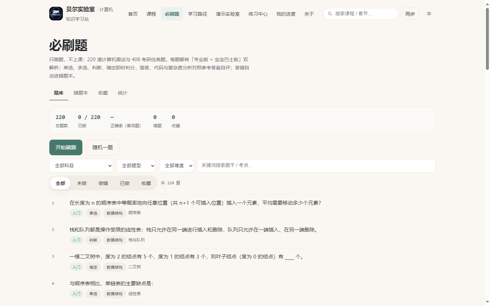
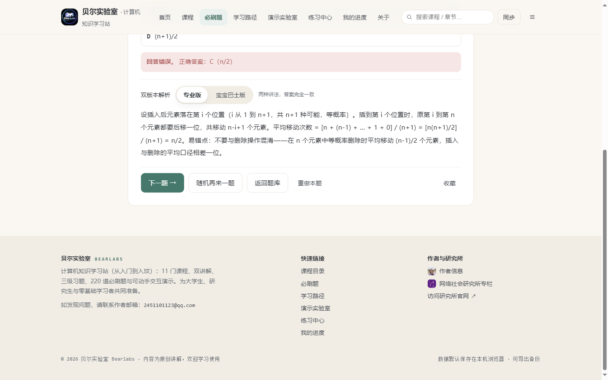
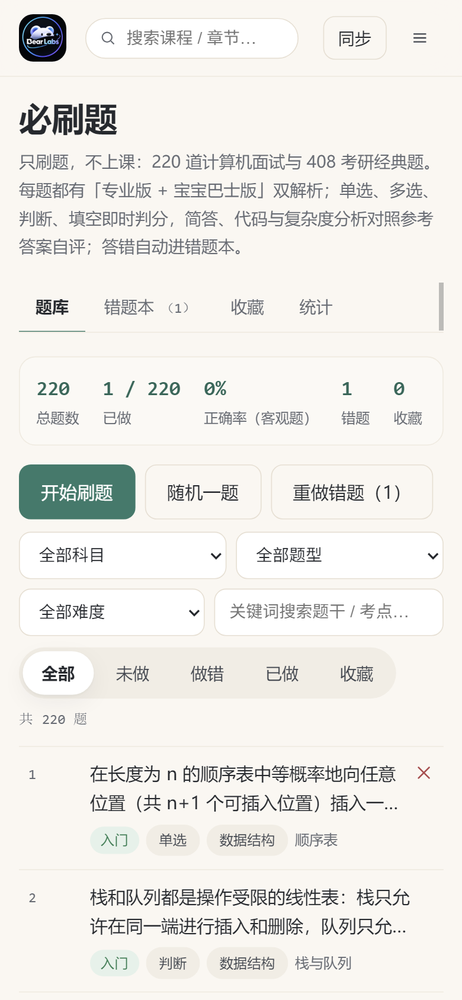
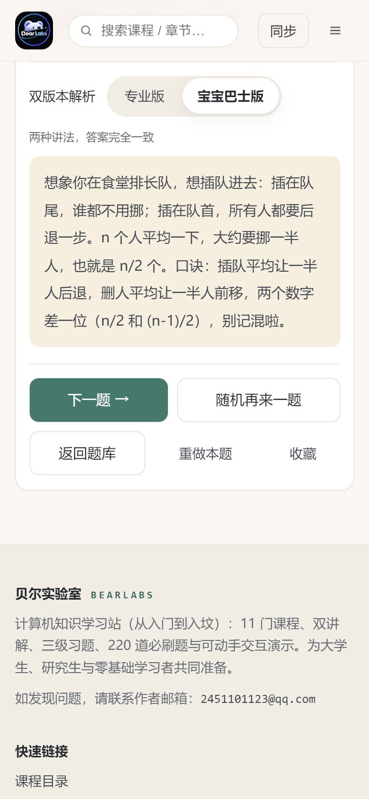

Self-check · 必刷题板块 · 自检报告
「必刷题」板块 · 交付自检报告
纯刷题板块（只放题目与解析）：220 道计算机面试与 408 考研经典题，8 大科目、7 种题型、三档难度递增，每题「专业版 + 宝宝巴士版」双解析，含筛选、错题本、收藏与进度统计。以下为逐项验收核对、分布统计、抽样对照与实机验证记录。
生成：2026-09-22 · 交付目录：DELIVERY/cs-learn-site/ · 板块入口：#/problems（主导航「必刷题」） · 校验报告：docs/problems-report.json · 端到端报告：docs/e2e-report.json
一、结论摘要
74/87/59
入门 / 进阶 / 冲刺 三档分布
总体结论 验收标准逐条核对全部通过 ：题库总量、考点覆盖、题型多样、难度递增、双版本解析、答题闭环、进度持久化、筛选检索、移动端可用与维护文档均已就绪；写作与复核由主线完成（子代理通道在 20 分钟运行上限内产出不足，已如实记录于工作台，详见第六节）。
二、验收标准逐项核对
验收标准 结论 证据 独立「必刷题」板块入口，板块内只有题目与解析 通过 主导航「必刷题」+ 首页横幅 + 页脚入口；路由 #/problems（题库 / 错题本 / 收藏 / 统计四个页签，无课程形态内容）；见下方截图与站内实测。 题库总量 ≥200 且不重复，每题唯一编号 通过 总计 220 题 ；题干指纹去重 220/220（重复 0） ；编号 pb-<科目>-NNN 唯一且连续；node tools/validate-problems.js 输出见第五节。 覆盖 408 四大科目 + 编程/算法/数据库/智力场景 通过 8 大科目：数据结构 30 / 计算机组成原理 30 / 操作系统 30 / 计算机网络 30 / 编程语言基础 25 / 算法与复杂度 30 / 数据库 25 / 智力·场景面试 20（交叉矩阵见第三节）。 题型多样（≥5 种），每种有实际题目 通过 7 种：单选 81 / 多选 25 / 判断 30 / 填空 27 / 简答 27 / 代码算法 15 / 复杂度分析 15；分布见第三节。 难度分三档且整体由易到难递增 通过 入门 74 / 进阶 87 / 冲刺 59；每科文件内按难度升序排序（校验器强检），默认刷题顺序即「入门 → 进阶 → 冲刺」分块推进。 每题都有专业版与宝宝巴士版解析 通过 覆盖率 100%（校验器逐题检查两版非空、字数下限）；复核阶段对 8 科目抽样细读 12 题，两版结论一致、答案同一（见第四节对照样例）。 答题—判分—看解析闭环可用 通过 端到端测试：「答题判分 + 双版本解析切换」「答错自动进错题本」通过；客观题（单选/多选/判断/填空）即时判分并展示正确答案，主观题（简答/代码/复杂度）对照参考答案自评；答错不会被吞掉。 作答记录与进度持久记录、可追踪 通过 localStorage 键 cslearn.problems.v1（与课程记录分离）；「刷新后记录仍在」「进度统计与本地台账一致」实测通过；提供错题本、收藏、统计界面与 JSON/CSV 导出、一键清空。 可按科目/题型/难度/关键词筛选与检索；支持顺序、随机、错题重做 通过 四项筛选可组合、结果计数实时更新（端到端 2 项筛选联动测试通过）；顺序刷题（题组前进/后退）、随机一题、只看未做/做错、重做错题全可用（冒烟 17 项含对应断言）。 手机端可正常刷题 通过 390 宽移动仿真实测：阅读区无横向溢出、选项可点、双版本解析切换可用；截图为证（第五节）。 交付题库维护与出题规范文档 通过 docs/problems-guide.md：字段结构、新增题目完整流程、难度评定标准、双版本解析写作规范、文案禁区与校验命令（不看代码也能加题）。原始需求约束（纯刷题、不复制商业题库、主观题不自动判分、无新增账号体系） 通过 板块内无课程/章节/视频形态；题目为经典考点原创改编；主观题仅提供参考答案与自评；不设付费墙、不新建账号体系（沿用站点既有能力）。
三、科目 × 难度 × 题型分布
科目 合计 入门 进阶 冲刺 单选 多选 判断 填空 简答 代码/算法 复杂度 数据结构 30 10 12 8 10 3 5 5 3 2 2 计算机组成原理 30 10 12 8 12 4 4 4 3 0 3 操作系统 30 10 12 8 11 3 5 4 4 0 3 计算机网络 30 10 12 8 13 4 4 4 3 0 2 编程语言基础 25 9 10 6 10 3 3 3 3 3 0 算法与复杂度 30 9 12 9 8 3 3 2 2 7 5 数据库 25 9 10 6 9 3 3 3 4 3 0 智力·场景面试 20 7 7 6 8 2 3 2 5 0 0 总计 220 74 87 59 81 25 30 27 27 15 15
数据来源：node tools/validate-problems.js --json docs/problems-report.json（含去重核验与全局门槛检查，全部通过）。
四、抽样对照样例（每科目 1 题，数据直接取自题库文件）
覆盖单选 / 填空 / 简答 / 代码多种题型；完整 220 题可在站内浏览（#/problems）。
数据结构 单选 难度 2 pb-ds-020 · 考点：栈的应用
将中缀表达式 a + b * c - d 转换为后缀（逆波兰）表达式，结果是：
A. a b c * + d - B. a b + c * d - C. a b c + * d - D. a b c d * + - 答案：A
专业版解析
按运算优先级与结合性加括号：( ( a + ( b * c ) ) - d )。转后缀时把运算符移到对应括号外：b*c 得 b c *；(a + [bc*]) 得 a (bc*) +；最后整体减 d 得 a (bc*+) d -，即 a b c * + d -。易错点：乘法优先级高于加减，a + b * c 的正确转法是先算 b*c；另外后缀表达式求值时从左到右扫描、遇运算符弹两个操作数，检验结果时可反向计算一遍。
宝宝巴士版解析
中缀表达式是「人话版」：a + b * c - d；后缀表达式是「先干活、后报账」：ab c 先乘，结果再和 a 相加，最后减 d。判断口诀：先按「乘除优先」加好括号，再把每个运算符挪到它管的那个括号后面，去掉括号，就是逆波兰式。
计算机组成原理 填空 难度 2 pb-co-013 · 考点：校验码
采用偶校验时，发送方在数据位后添加校验位，使得整个码字（数据位 + 校验位）中 1 的总个数为 ____（填「奇数」或「偶数」）。
答案：偶数 / 偶数个
专业版解析
偶校验规则：使码字中 1 的总个数为偶数（包括 0 个 1）。发送方统计数据位中 1 的个数，若已是偶数则校验位填 0，否则填 1。接收方重新统计，若为奇数则判定传输出错。相应地，奇校验使 1 的总个数为奇数。易错点：奇/偶校验的定义对象是「整个码字中 1 的个数」，而不是「校验位本身的取值」；两种规则不要记反。
宝宝巴士版解析
偶校验像约定「全班举手的人数必须是偶数」。出发前队长数一数：如果已经是偶数就让校验员不动；如果是奇数，校验员也举一只手凑成偶数。到达后重新数：人数变成奇数，说明路上有人把「手」掉了——发现异常。
操作系统 单选 难度 2 pb-os-018 · 考点：分页存储
某系统页面大小为 4KB，逻辑地址（十进制）为 8196，则其页号是：
答案：C
专业版解析
4KB = 4096 字节，页内偏移占 12 位。页号 = 8196 ÷ 4096 = 2（整除部分），页内偏移 = 8196 - 2×4096 = 4。换算成二进制更直观：8196 = 0b10 0000 0000 0100 → 高 20 位是页号（值为 2），低 12 位是偏移（值为 4）。易错点：页号从 0 开始编号；除法的余数不是页号而是偏移；若题目给 16 进制地址，直接按位数切分更快。
宝宝巴士版解析
页面大小 4KB，就像每个抽屉装 4096 颗糖。现在数到第 8196 颗糖：第 1 个抽屉装 0 到 4095 颗，第 2 个抽屉装 4096 到 8191 颗，第 8196 颗在第 3 个抽屉里。抽屉编号从 0 数起：第 3 个抽屉编号是 2。所以页号 = 2。
计算机网络 简答 难度 3 pb-net-025 · 考点：TCP连接
简述 TCP 三次握手的完整过程，并说明「为什么需要三次而不是两次」。
答案：过程：第一次，客户端发送 SYN=1、seq=x，进入 SYN-SENT；第二次，服务器回复 SYN=1、ACK=1、seq=y、ack=x+1，进入 SYN-RCVD；第三次，客户端发送 ACK=1、ack=y+1，双方进入 ESTABLISHED。需要三次的原因：防止已失效的旧连接请求报文突然到达服务器造成错误连接——若只有两次，服务器收到一个滞留在网络中的旧 SYN 后就会直接建立连接并分配资源，而客户端并不会响应，导致服务器资源被白白占用；三次握手让服务器在收到第三次确认前不建立连接，相当于客户端的一次「最终确认」，使双方都确认「对方确实要通信且双方收发能力正常」。
专业版解析
从「过程」与「为什么」两方面作答。过程按报文标志与状态机描述：SYN → SYN+ACK → ACK，同时交代序号细节（SYN 消耗一个序号，第三次的 ack=y+1）。为什么三次：核心是抵御「历史重复 SYN」的干扰——网络中的旧报文可能延迟到达，若两次握手即建立连接，服务器会被死连接的半开状态拖累（资源泄漏甚至被 SYN 洪泛放大利用）；三次握手下，服务器把「分配连接资源的时机」推迟到收到确认之后，未确认的半连接只保留极轻量的状态。易错点：第三个报文可以携带数据；前两个不可以；SYN 洪泛攻击（SYN flood）正是利用半连接状态，对策之一是 SYN cookie。
宝宝巴士版解析
三次握手像打电话确认：「喂，听得到吗？」（我发你听）→「听得到，你听得到我吗？」（你发我听）→「听得到！」（收尾确认）。为什么不能只打两次？因为电话线里可能飘着一段很早以前的旧录音——如果你一喊「听得到吗」它就冒充我回「听得到」，你就以为我在听，其实人早走了，白等一场还占着线路。多问一轮「你听得到我吗」，就没人能冒名顶替了。
编程语言基础 单选 难度 1 pb-pl-009 · 考点：浮点数
在多数采用 IEEE754 浮点数的语言中，表达式 0.1 + 0.2 == 0.3 的结果是：
A. true B. false C. 抛出异常 D. 取决于操作系统 答案：B
专业版解析
0.1、0.2、0.3 在二进制浮点中大多无法精确表示（它们换算成二进制是无限循环小数），0.1 + 0.2 的实际结果约为 0.30000000000000004，因此与字面量 0.3 不相等，表达式为 false。正确做法：浮点比较应使用误差容忍（如 |a-b| < 1e-9），或改用十进制精确类型（如 Python decimal、Java BigDecimal）。易错点：这不是语言 bug，而是二进制基数的固有限制；整数运算在 2^53 范围内不受影响。
宝宝巴士版解析
把 0.1 想成「三分之一」：十进制里写不出来整数，二进制里 0.1 也写不干净，只能存一个「极接近版」。两个极接近版相加，误差攒成了 0.30000000000000004——就差那么一丁点（约 4×10⁻¹⁷）。所以程序里比小数，别用 == 死磕，要允许一点点误差（比如「差得小于一亿分之一就算相等」）。
算法与复杂度 代码/算法 难度 2 pb-algo-019 · 考点：链表
实现反转单链表的函数，返回新的头结点，并说明复杂度。（语言不限，请注明）
答案：参考实现（JavaScript）：
function reverseList(head) {
let prev = null, cur = head;
while (cur) {
const next = cur.next;
cur.next = prev;
prev = cur;
cur = next;
}
return prev;
}
时间复杂度 O(n)：每个结点访问一次；额外空间 O(1)：只用了三个指针。
专业版解析
迭代法三步循环：保存后继（next）、反转指针（cur.next = prev）、向前推进（prev/cur 前移）。返回的 prev 即新头结点（原尾结点）。正确性直觉：把「箭头」一格格掰向反方向，循环结束时所有指针已反转。易错点：忘记先保存 next 会「断链」找不到后继；返回 head 而不是 prev；空链表与单结点链的边界（空链表时循环不执行、返回 null，正确）。递归写法（head.next.next = head; head.next = null）也行但空间 O(n)，面试中两版都建议准备。
宝宝巴士版解析
反转链表像把一列「单向火车」调头：每节车厢只认「后面一节」。你做调头指挥：把每节的「下节车厢」指针扭向「上一节」，然后带着三个小旗子（上一节、当前节、下一节）整体前移一格。全部扭完，最后一节就成了新的车头。小心：先把「下一节」记下来再扭指针，不然就迷路了。
数据库 单选 难度 2 pb-db-011 · 考点：索引原理
MySQL InnoDB 存储引擎的索引底层采用的主要数据结构是：
A. 哈希表 B. B+ 树 C. 二叉搜索树 D. 跳表 答案：B
专业版解析
InnoDB 索引的底层是 B+ 树：非叶结点只存键值、不存数据，一次磁盘 IO 能读入更多键，树更矮（千万级数据通常 3 层左右）；所有数据都在叶子结点且叶子间用链表相连，范围查询高效稳定。为什么不用其他结构：哈希索引不支持范围查询与排序（等值快但场景窄）；二叉树/红黑树树高受限于 2 叉，磁盘 IO 次数多；跳表多用于内存结构（如 Redis）。易错点：Memory 引擎默认哈希索引、MyISAM 也用 B+ 树（但叶子存数据地址、非聚簇）；InnoDB 主键索引是聚簇索引（叶子即数据行）。
宝宝巴士版解析
B+ 树像一个「矮胖的图书馆索引柜」：每一层的抽屉里只放「编号范围指引牌」（不塞书），所以一层能装下超多指引，三层就够找到千万本里的任何一本。找到楼层后，所有书其实都摆在最底层的书架上，而且书架之间手拉手连着——想找「从 A 书到 C 书」一整排，顺着走就行。矮（少跑腿）、全在底层（找谁都一样快），这就是它被选中的原因。
智力·场景面试 简答 难度 2 pb-brain-013 · 考点：系统设计
简述一致性哈希（Consistent Hashing）的基本思想，以及它解决了什么问题。
答案：基本思想：把哈希值空间组织成一个环（如 0 ~ 2³²-1），将缓存节点（或分片）与数据键都通过哈希映射到环上；数据键顺时针找到的第一个节点即为其归属节点。解决的问题：普通「取模分片」（hash % N）在节点数量变化时几乎全部映射失效（缓存雪崩式重建）；一致性哈希在增删一个节点时，只影响环上相邻区间的数据（约 1/N 的数据需要迁移），其余映射保持稳定。改进：引入「虚拟节点」——每个物理节点映射成多个虚拟节点散布在环上，缓解数据倾斜（节点少时分布不均）与负载不均问题。
专业版解析
按「问题 → 方案 → 优化」三段作答：问题段点明取模分片的痛点（N 变化引起全量重映射）；方案段描述环结构、顺时针归属与增删只影响局部的性质（迁移量 ≈ 1/N）；优化段引入虚拟节点解决倾斜，并说明工程细节（副本数、单调性、负载均衡评价）。补充对比：与「哈希槽」（Redis Cluster 的 16384 槽）思路相通——先分槽再分配槽位，扩缩容时搬迁槽。易错点：把一致性哈希说成「让数据分布绝对均匀」（它只保证稳定性，均匀性靠虚拟节点改善）；忽略「时钟方向」与「为什么是 1/N」的推导。
宝宝巴士版解析
普通分片像「固定 4 个格子分糖果」：糖果按「编号除以 4 的余数」进格。一旦加了一格（变 5 格），几乎所有糖果都要重新分——乱成一锅粥。一致性哈希把格子摆成一个「圆环」：每颗糖果沿着环往前走，遇到的第一个格子就是它的家。加一个格子时，只有它「插队」位置前后的那一小段糖果需要挪窝（大约 1/N），其余原地不动。小补丁：一个节点变成环上好多个「分身」（虚拟节点），免得一段糖果全挤到一个格子。
五、实机验证记录
5.1 结构校验（tools/validate-problems.js）
8 个科目文件全部 PASS：字段完整性、ID 连续与唯一、答案与选项合法性、双解析字数与禁用词（emoji / 外链 / HTML / 繁体字提示）、题量精确（30/30/30/30/25/30/25/20）、三档难度每科 ≥3、每科题型 ≥4、全库去重 220/220。
5.2 端到端交互测试（tools/e2e.js，24/24 通过）
必刷题相关 7 项：题库列表与页签 / 难度筛选联动 / 题型筛选联动 / 答题判分 + 双解析切换 / 答错自动进错题本 / 进度统计与本地台账一致 / 流程无 JS 异常。课程与站点原有 17 项全部保持通过（无回归）。
5.3 板块实机冒烟（tools/_psmoke.js，17/17 通过）
入口渲染、科目筛选、单题渲染、提交判分、双解析切换、localStorage 写入、刷新持久化、错题本、收藏、统计页、未做筛选、随机一题、顺序题组、移动端两项、三字母科目标签、无 JS 异常。
5.4 关键计算题独立复算（23/23 通过）
对全库计算类题目独立重算复核，例：哈夫曼 WPL=33、FIFO 缺页=9（且 4 块时 10 次，Belady 反例成立）、SJF 平均等待=4、完全二叉树 n=1000 叶子=500、/26 可用主机=62、香农公式≈30kbps、流水线 312ns、Cache AMAT 7→4ns（提升 42.9%）、二分最多 7 次、发送时延 800μs、生日悖论 23 人 >50%、过桥 17 分钟等，全部与题库答案一致。
5.5 实机截图（docs/screenshots/problems/）

桌面 1440×900：题库主页——指标条、模式按钮、四项筛选、220 题列表。 
桌面：答题后即时判分 + 「专业版 / 宝宝巴士版」解析切换（答错场景）。 
移动端 390 宽：筛选栏与列表完整可读，无横向滚动。 
移动端：宝宝巴士版解析切换可用。 六、复核方法与修复记录
复核方式：主线完成数字复算（独立重算 23 项）、全库 220 条题干通读、8 科目 12 题抽样细读。
说明：题库写作与复核原计划由子代理分批完成，实测 4 路子代理均在 20 分钟运行上限超时且产出近乎为零（输出 tokens ≤407，未落盘）；据此改为「主线直写 + 主线复核」，并已记录于工作台（plan.md 执行记录）。
修复 1 · 科目键解析 ：三字母科目（net/algo/brain）在统计矩阵与题卡上取科目名错误（取到 "ne"/"al"/"br"）——修正校验器与前端的分割逻辑，并补充专项断言（冒烟「三字母科目标签完整」）。
修复 2 · 考点标签字数 ：两处考点标签不足 2 字（如「栈」「堆」）——改为「出栈序列」「二叉堆」。
修复 3 · 题干过短 ：一处题干 8 字低于 10 字下限——扩写为完整题干。
修复 4 · 填空答案变体超限 ：一处填空答案 5 个变体超过 4 上限——精简为 4 个。
修复 5 · 繁体字与扫描器 ：一处「誰」改为简体，并将「疑似繁体字」检查固化进校验器（全库现为零告警）。
修复 6 · 测试脚本转义 ：e2e 两处筛选断言正则过度转义导致误报（功能本身正常）——改为数值解析并重跑通过。
修复 7 · 截图环境 ：测试用无头浏览器残留进程曾污染截图状态——清理 86 个残留进程后重拍，主页恢复「0/220」全新状态。
七、维护入口
出题与维护规范：docs/problems-guide.md（新增一道题的完整流程、难度标准、双解析写法、文案禁区）。
题库文件：content/problems/<科目>.json（8 科交卷 + 由构建脚本生成的 manifest.json）。
校验命令：node tools/validate-problems.js（全库） / --file <文件>（单科自查）；构建：node tools/build.js。
站点接入：导航与路由已挂在 js/app.js；板块代码为 js/problems.js、js/views-problems.js、css/problems.css。
本报告由 _mkcheck.js 从真实题库与校验产物自动生成，分布与样例数据与线上题库一致。相关文件：docs/problems-guide.md · docs/problems-report.json · docs/e2e-report.json · docs/screenshots/problems/。